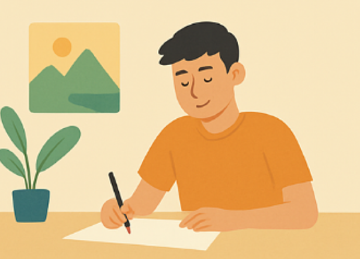

Reto artístico

Durante las semanas de parciales, nuestras emociones
están a flor de piel. Aprovecha este momento para
plasmar tus sentimientos en un dibujo que capture el
ánimo de esta etapa.
Durante las semanas de parciales, nuestras emociones
están a flor de piel. Aprovecha este momento para
plasmar tus sentimientos en un dibujo que capture el
ánimo de esta etapa.